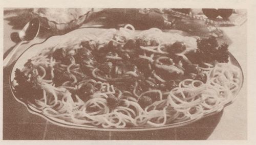
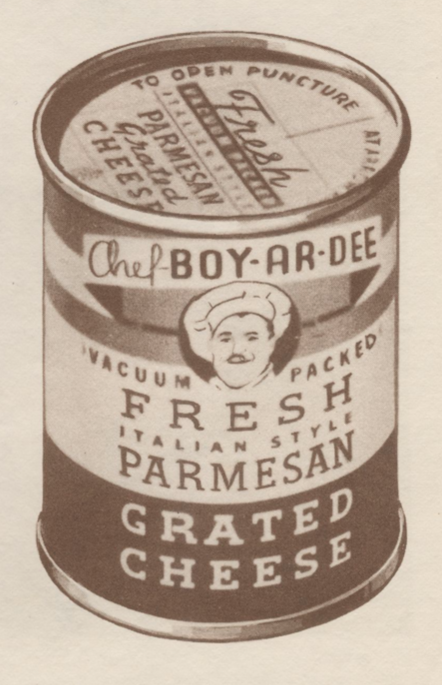
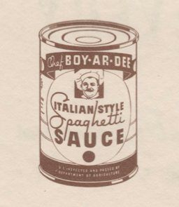

Chef Boy-ar-dee's Spaghetti
One of the earliest mass-market spaghetti dinners

Ingredients
- Spaghetti
- 2 tablespoons butter
- 6 tablespoons of canned cheese
- 7 oz of canned Boy-ar-dee sauce
Instructions
- Boil Pasta
- Add 1/2 cup water to tomato sauce
- Heat sauce
- Drain pasta
- Add butter to pasta
- Add half the cheese to the pasta
- Combine pasta and sauce
- Serve with cheese


Menu
This website was built as a project for completing the Odin Project coding course.
This site contains affiliate links and advertising links from Amazon Services LLC and Bookshop.org.